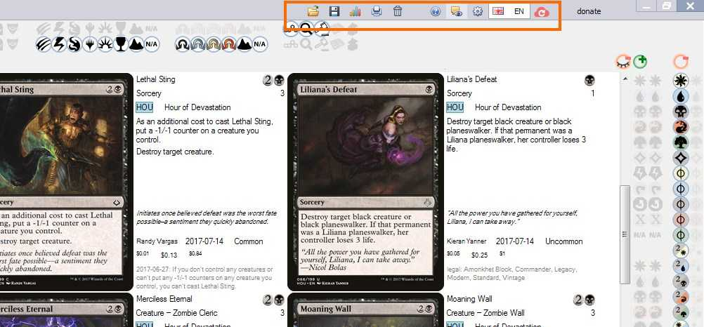

2. Deck and Collection Editor
Deck editing
| result | action |
|---|---|
| add / remove 1 card |
Drag-n-drop card to deck area (bottom area of the
window) or use Right and Middle mouse buttons |
drag from main deck and drop
to sideboard |
dragging a card to main deck / sideboard tab |
drag-n-drop cards between
different open tabs |
dragging a card to a tab in window header |
create a new tab while draggig
|
dragging card to + button in window header |
| add / remove 4 cards |
Ctrl + drag-n-drop or
Ctrl + Right / Middle mouse click |
| switch between main deck and sideboard |
Use 
|
Collection editing
| result | action |
|---|---|
| add / remove 1 card from collection |
Alt + Right / Middle mouse click |
| add / remove 4 cards from collection |
Ctrl + Alt + Right / Middle mouse click |
Undo / redo buttons
Are located at the top left of the window in the header. Undo, Redo apply to many
end-user actions like checking / unchecking Filter buttons, changing search text and so on.
{kind=link}
Buttons in the window header right side
{kind=link}
Load deck or collection from a file, Save deck or collection to a file.
Supported are formats of
- Forge
- Magarena
- XMage
- Magic The Gathering Online *.txt deck and collection files
- Cockatrice supports the format used by Magarena
- To use your decks with Riiak's DotP 2014 Deck Builder use a modified version supporting Forge deck format
Deck statistics. Opens a Pivot report window. Use it to view mana curve, price breakdown,
or create a custom report by specifying argument, series and summary fields.
Print deck. The print buttons doesn't actually print, instead it creates images of cards
by groups of 8 that can be printed on A4 paper.
Clear deck. Use it to start creating a new deck from scratch
Help menu. This is how you probably got to read this file.
Enable / disable tooltips. Tooltips are helpful but also annoying.
Edit configuration file Use it to tell the program where to find your custom card images
or tweak some other settings.
NOTE: To apply your changes save the modified configuration file and restart the program.
Language selector. The Language selector affects the cards' texts only. The User Interface
is allways in English.
Update Shows a window where you can
- Check for a new version of Mtgdb.Gui
- Download the most recent cards database from Mtgjson.com
- Download card images
- Download artworks